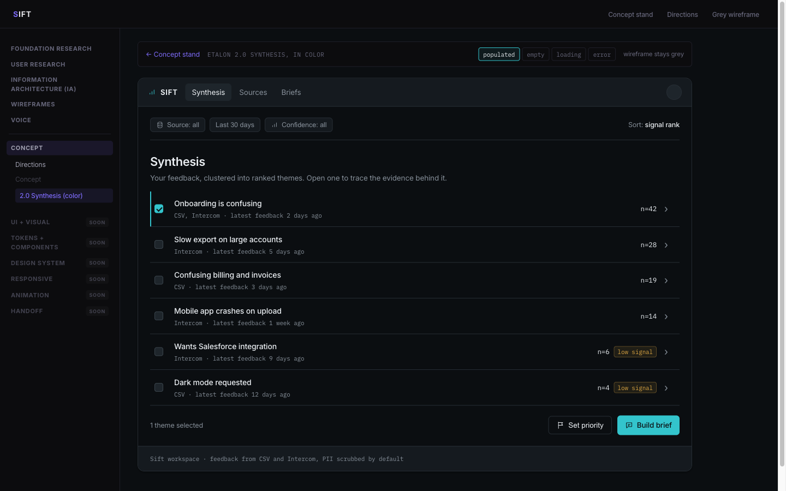
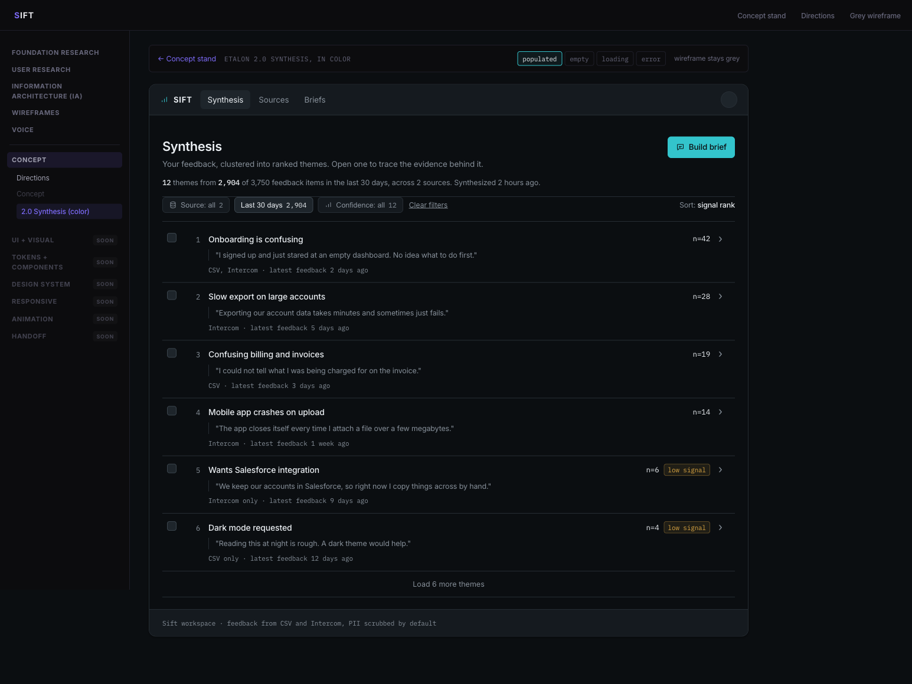
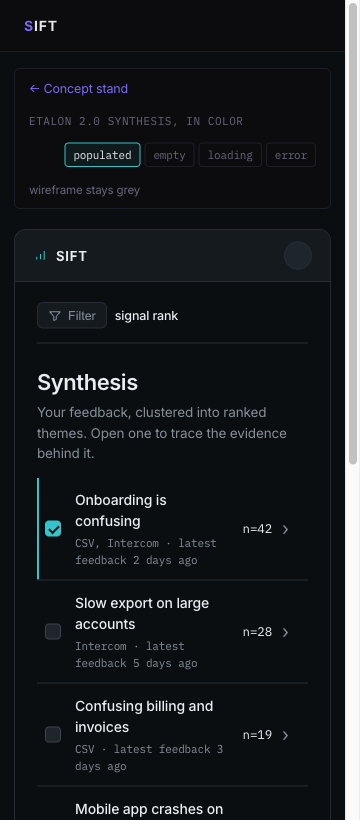
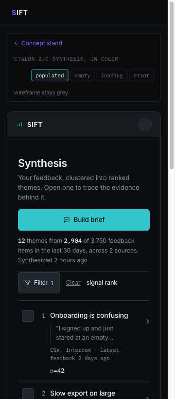

The visual language
One brand, Command center, on the ranked ledger the etalon actually is. Every color, type, and form decision below is signed with the attribute it comes from. The page chrome is the portfolio theme; everything framed is the product brand it documents.
Synthesis, and the brief a stranger reads
Two screens carry the language: the etalon, a dense ranked instrument its owner reads at a desk, and the public brief, one column of reading matter opened cold from a link by someone with no account. Same language, opposite density. Everything below this is the specification behind them.
Open the etalon in color
Open the shared brief
Colored copies in design/: the etalon with its empty, loading and error states, plus the public brief. The grey wireframe stays the source of truth.
docs/decisions.md.
Layered neutrals, one accent
Depth from tone and hairline borders, not shadow. The accent is the only saturated color on a working screen, reserved for the one next action and strong confidence. The neutrals tilt faintly cool toward the accent, never warm. Each color is signed with its attribute.
Inter for the interface, mono for the numbers
A humanist grotesque plus a monospace, a real contrast axis. The count reads in mono because the number carries the weight (Voice Principle 1). The theme is set as an editorial finding in normal case, never a colored label chip (A5).
590 · -0.02em
400 / 500
counts, citations
Radius, spacing, elevation
Compact and consistent. 6px on cards, buttons, and inputs; 4px on badges. Depth is one or two tonal steps plus a hairline, not a diffuse shadow (A1).
Data first, not photo first
Sift is a data tool, not a photo product. The app surfaces carry no decorative photography; the evidence is text, and the calm comes from hierarchy and whitespace (Design Principle 2, A1). Photography appears in one place only: the marketing Home hero (0.0), a single restrained real photograph, never a grey placeholder and never on an app screen.

Rule for the app: no stock imagery, no illustration, no avatars of invented people (feedback authors are PII-scrubbed, so a face would be a lie). Where a source needs a face, it is a channel token (Intercom, Zendesk, CSV), monochrome. The photograph on the left is documented here for reproducibility and belongs to the marketing surface, outside the two app screens this stage colors.
Solar Linear, monochrome
One line weight, inline SVG (not a CDN script), Porcelain or Ash by default, Cyan only on the active or selected icon (A1). Coverage: the nav, metadata, badges, buttons, and states.
Three live components
The product's real controls, built from the language above. Each carries its attribute.
Action button A1
Theme card + confidence A2 · A3
Form field Voice P4
WCAG AA, verified
Every text pair passes AA. Ash is the dimmest tone used for text; nothing darker carries text. Any new pair introduced later is measured before it ships.
| Foreground | Background | Ratio | Use |
|---|---|---|---|
| Porcelain | Canvas | ~16:1 AA | Primary text |
| Ash | Canvas | ~5.5:1 AA | Secondary text |
| Cyan | Canvas | ~9:1 AA | Accent text, icons |
| Canvas | Cyan fill | ~9.5:1 AA | Text on primary button |
| Amber | Canvas | ~8.5:1 AA | Low-signal tag |
| Red | Canvas | ~5:1 AA | Error text |
Where the language came from
Three brand toolkit plates were generated against the emotions in the personas and against what the competitors already look like, and one was chosen at a glance. Every value in the palette above traces to a pixel of that plate or to a character decision recorded beside it.

DESIGN-artifacts.md: the mark was flattened to monochrome, because a gradient would break the single-accent discipline, and Cyan was fixed as the one accent.

| Borrowed | From | Which anxiety it answers |
|---|---|---|
| One accent on layered neutrals, weight from hierarchy | Linear (base) | Alex works in 10 to 15 minute sessions; loud copy and loud color are friction, not delight |
| Inline citation marker plus a source panel | Perplexity, Parallel | "Confident presentation with no visible reasoning" is the named stop-trust trigger |
| Ranked rows with a count and a drill | Mercury, Amplitude | The synthesis is the value and the drill is the trust mechanism, so the first screen ranks rather than dumps |
| A tiny semantic accent on a monochrome field | shadcn/ui | Thin evidence has to read as information, not as an alarm |
A reference says HOW something is done; an attribute says WHY it is right for us. A technique with no attribute behind it is borrowing without a reason. Full table in design/concept/docs/references.md.
Before and after, and what the audit found
The colour copy was made before the wireframes were rebuilt on the block bank. The gap was not cosmetic: the screen could not demonstrate two of its own five attributes.




| Found | Severity | Resolution |
|---|---|---|
| No control in the colour layer met the 44px target floor: checkbox 16, drill 18, chips 27, tabs 32, buttons 36. The grey contract had just been fixed to meet it; the colour copy had drifted from it. | P1 | Fixed in _theme.css. Three exceptions are named rather than averaged: the checkbox at the 24px AA floor, links inside running text, and the avatar which reads at 28 and is hit at 44 through an overlay. |
| No designed focus state anywhere in the colour layer, only the browser default ring, which on a dark instrument is barely a ring. | P1 | Fixed. :focus-visible draws the accent, because focus is the keyboard's version of the active state. |
| The separator between phases sat at 1.39:1. Decorative and aria-hidden, so not a WCAG failure, but a separator nobody can see is not doing its job. | P3 | Fixed. Raised to Ash at reduced opacity. |
| The detector flags Inter as an overused face: every wave of generated UI converges on it. | Accepted, with the argument | Kept. Inter is signed to A5 and to the named taste, it is self-hostable, and the pairing carries its contrast on the mono half, where the counts live. Recorded rather than waved away, because "the reflex answer happens to be right" is a claim that has to be made out loud. Revisit when fonts become tokens at Stage 07. |
| Every text pair measured in the browser against its real background: 5 pages, both viewports. | Pass | No failures. Ash on Canvas is the dimmest pair that carries text, at about 5.5:1. |
Run with /impeccable audit plus a browser pass that measured contrast, target size, focus, landmarks and overflow on every page at 1440 and 360. Full record in docs/decisions.md.